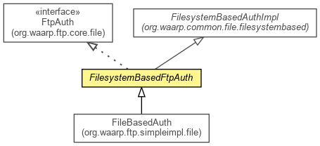

org.waarp.ftp.filesystembased
Class FilesystemBasedFtpAuth
java.lang.Object
 org.waarp.common.file.filesystembased.FilesystemBasedAuthImpl
org.waarp.ftp.filesystembased.FilesystemBasedFtpAuth
org.waarp.common.file.filesystembased.FilesystemBasedAuthImpl
org.waarp.ftp.filesystembased.FilesystemBasedFtpAuth
- All Implemented Interfaces:
- org.waarp.common.file.AuthInterface, FtpAuth
- Direct Known Subclasses:
- FileBasedAuth
public abstract class FilesystemBasedFtpAuth
- extends org.waarp.common.file.filesystembased.FilesystemBasedAuthImpl
- implements FtpAuth

Filesystem implementation of a AuthInterface
- Author:
- Frederic Bregier
| Fields inherited from class org.waarp.common.file.filesystembased.FilesystemBasedAuthImpl |
isIdentified, password, rootFromAuth, session, user |
| Methods inherited from class org.waarp.common.file.filesystembased.FilesystemBasedAuthImpl |
businessClean, getAbsolutePath, getBusinessPath, getRelativePath, getSession, getUser, isIdentified, setBusinessPassword, setBusinessRootFromAuth, setBusinessUser, setIsIdentified, setPassword, setUser |
| Methods inherited from class java.lang.Object |
clone, equals, finalize, getClass, hashCode, notify, notifyAll, toString, wait, wait, wait |
| Methods inherited from interface org.waarp.common.file.AuthInterface |
getBusinessPath, getRelativePath, getSession, getUser, isAdmin, isBusinessPathValid, isIdentified, setPassword, setUser |
account
protected String account
- Account name
FilesystemBasedFtpAuth
public FilesystemBasedFtpAuth(FtpSession session)
- Parameters:
session -
getAccount
public String getAccount()
- Specified by:
getAccount in interface FtpAuth
- Returns:
- the account
setBusinessAccount
protected abstract org.waarp.common.command.NextCommandReply setBusinessAccount(String account)
throws org.waarp.common.command.exception.Reply421Exception,
org.waarp.common.command.exception.Reply530Exception,
org.waarp.common.command.exception.Reply502Exception
- Set the account according to any implementation and could set the rootFromAuth. If NOOP is
returned, isIdentifed must be TRUE.
- Parameters:
account -
- Returns:
- (NOOP,230) if the Account is OK, else return the following command that must follow
and the associated reply
- Throws:
org.waarp.common.command.exception.Reply421Exception - if there is a problem during the authentication
org.waarp.common.command.exception.Reply530Exception - if there is a problem during the authentication
org.waarp.common.command.exception.Reply502Exception - if there is a problem during the authentication
setAccount
public org.waarp.common.command.NextCommandReply setAccount(String account)
throws org.waarp.common.command.exception.Reply421Exception,
org.waarp.common.command.exception.Reply530Exception,
org.waarp.common.command.exception.Reply502Exception
- Specified by:
setAccount in interface FtpAuth
- Parameters:
account - the account to set
- Returns:
- (NOOP,230) if the Account is OK, else return the following command that must follow
and the associated reply
- Throws:
org.waarp.common.command.exception.Reply421Exception - if there is a problem during the authentication
org.waarp.common.command.exception.Reply530Exception - if there is a problem during the authentication
org.waarp.common.command.exception.Reply502Exception
clear
public void clear()
- Clean object
- Specified by:
clear in interface org.waarp.common.file.AuthInterface- Overrides:
clear in class org.waarp.common.file.filesystembased.FilesystemBasedAuthImpl
getBaseDirectory
public String getBaseDirectory()
- Specified by:
getBaseDirectory in interface org.waarp.common.file.AuthInterface
Copyright © 2009-2012 Waarp. All Rights Reserved.